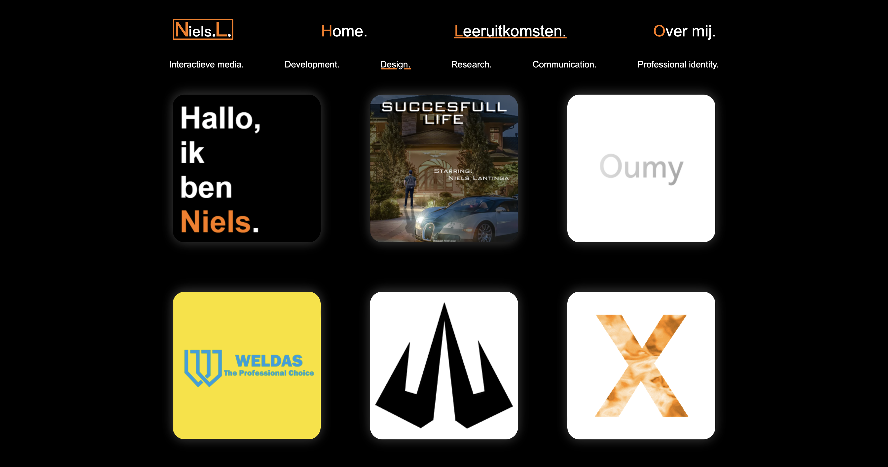
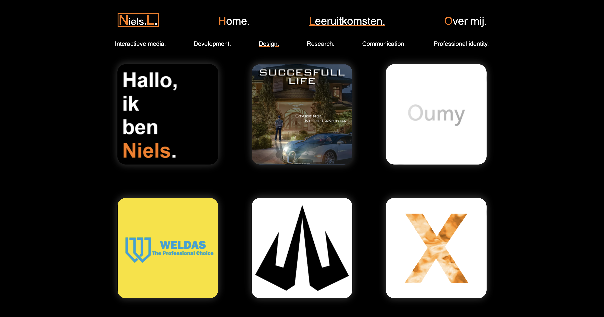

This is the website I created in semester 2 where I had to demonstrate all the skills we had been taught. This website was not responsive, as this was not mandatory, and we had not yet been taught how to do this.
At the time this was a difficult project, because I did not have much development experience. However, I believe that my skills are improving each month. In the second picture, if you hover over an image, you will see the name of the learning outcome. This was the same as for the projects in the learning outcomes. My favorite color is orange, which is the reason for all the orange accents.
I also made a fun Easter egg on the homepage. If you clicked on my image, it would redirect you to a different page. The final image on this page is the Easter egg I had made. The reason of the easteregg is I had bought a macbook at the time. So I memed it.
Photoshop, Visual Studio Code(html, css, javascript)